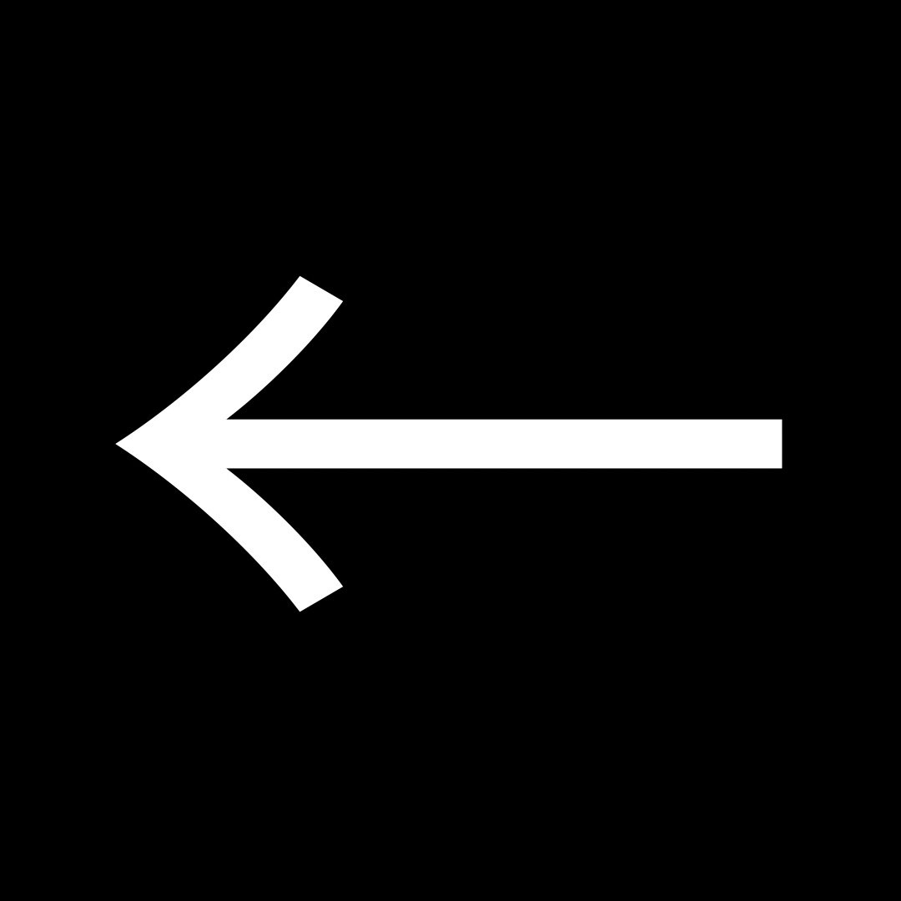
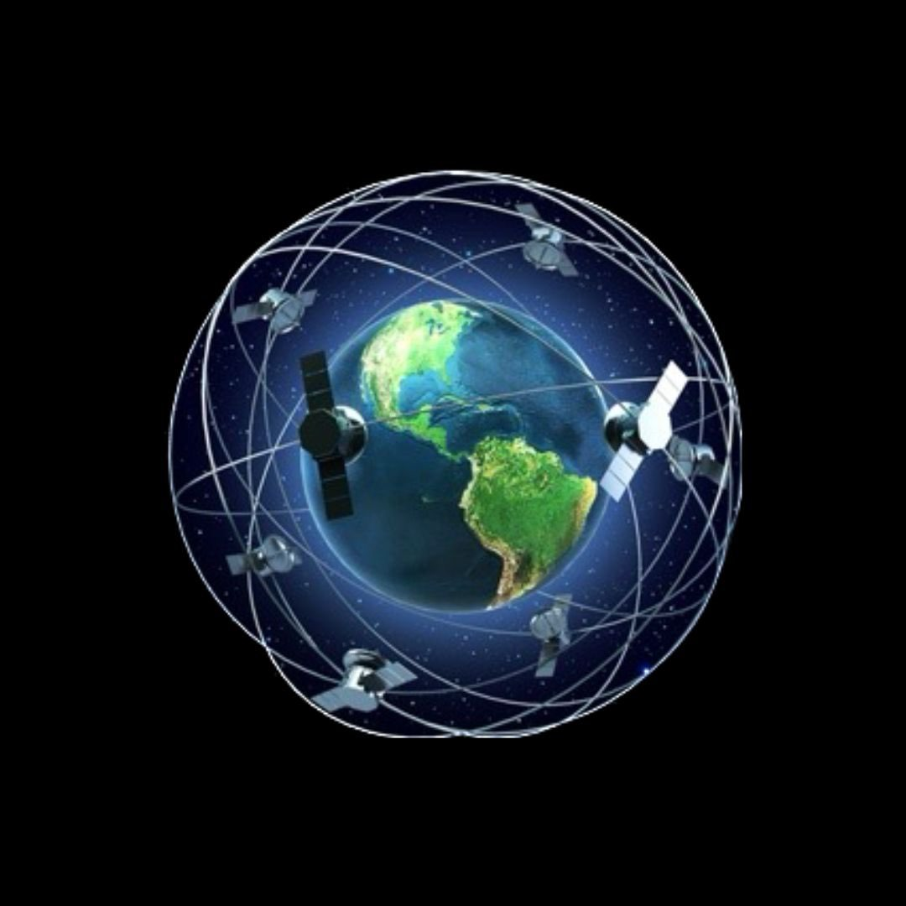

|
Oui, on pourrait bien mourir à
cause d'un débris de satellite
|
 |
|
Il n'est pas impossible de mourir à cause de débris de satellite qui retomberaient sur
Terre. Le risque qu'un avion soit percuté par l'un de ces débris s'élève aujourd'hui à
0,1% etpourrait aller jusqu'à 0,84% en 2035.
|